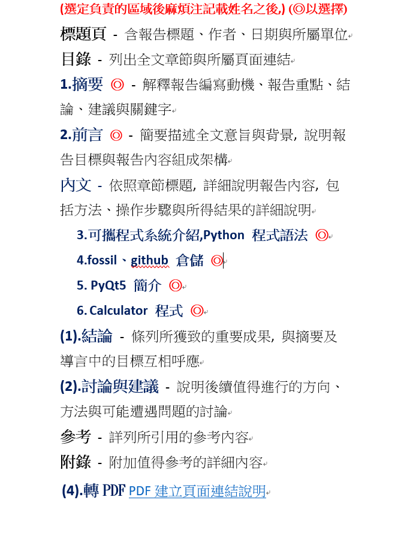

<!doctype html>
<html lang="en">
<head>
    <meta charset="utf-8">
<title>
2017 Spring 機械設計工程系網際內容管理
</title>
    <meta name="description" content="A framework for easily creating beautiful presentations using HTML">
    <meta name="author" content="Hakim El Hattab">
    
    <meta name="apple-mobile-web-app-capable" content="yes">
    <meta name="apple-mobile-web-app-status-bar-style" content="black-translucent">
    
    <meta name="viewport" content="width=device-width, initial-scale=1.0, maximum-scale=1.0, user-scalable=no">
    
    <link rel="stylesheet" href="data/reveal/reveal.css">
    <link rel="stylesheet" href="data/reveal/black.css" id="theme">
    
    <!-- Theme used for syntax highlighting of code -->
    <link rel="stylesheet" href="data/reveal/zenburn.css">

    <!-- Printing and PDF exports -->
    <script>
        var link = document.createElement( 'link' );
        link.rel = 'stylesheet';
        link.type = 'text/css';
        link.href = window.location.search.match( /print-pdf/gi ) ? 'data/reveal/pdf.css' : 'data/reveal/paper.css';
        document.getElementsByTagName( 'head' )[0].appendChild( link );
    </script>

    <!--[if lt IE 9]>
    <script src="data/reveal/html5shiv.js"></script>
    <![endif]-->
</head>

<body>
<div class="reveal">
<!-- Any section element inside of this container is displayed as a slide -->
<div class="slides">
<section data-markdown>
    <script type="text/template">
## 2017Fall CADP 與 CP

### 虎科大機械設計工程系

<small>
Created by [KMOLab](http://kmolab.github.io/blog/)
</small>

40623223 任明彥

[網誌](blog/index.html)


    </script>
</section>


						
<section data-markdown>
    <script type="text/template">
##學習準備

* 準備筆記本、隨身碟與耳機                                   (✓)
* 充分了解隨身系統的啟動關機與使用                    (✓)
* 先在近端運作, 然後同桌電腦, 最後區網與雲端    (✓)
* 了解機械設計本質, 六種表達與如何培養創造力  (△)
* 要怎麼收穫, 就那麼栽, 沒有捷徑, 真的沒有捷徑  (度)
* 每天紀錄, 自己如何過完人生中這個寶貴的一天  (否)

    </script>
</section>


						
<section data-markdown>
    <script type="text/template">
###目錄
◉1W-3W課程規劃及學習狀況

◊課程規劃
◊學習狀況
◊筆記

◉W4-W6課程規劃及學習狀況

◊課程規劃
◊學習狀況
◊筆記
    
◉W7-W9課程規劃及學習狀況

◊考試-w7
◊考試-w8
◊考試-w9

◉心得

◉自評成績


    </script>
</section>
<section>
    <section data-markdown>
        <script type="text/template">
    ## 1W-3W課程規劃

    ◉這三週預定為導入週,是讓同學是先熟悉上課方式及了解課程目的、內容與之後的學習目標

    預定的上課詳細內容[W1-W3 導入週](https://mde1a1.kmol.info/2017fall/wiki?name=cadpw1-w3)
        </script>
    </section>

    <section data-markdown>
        <script type="text/template">
    ##學習狀況

    由於鮮少接觸這方面相關知識,所以在剛開始會較無法理解其定義及功能,因為上述的原因而較難跟上老師的節奏,需花更多的時間去摸索和了解,而出錯的機會也非常多
        </script>
    </section>

    <section data-markdown>
        <script type="text/template">
    ##筆記
    <a href="https://cpb.kmol.info/40623223/raw/%E6%96%B0%E5%BB%BA%E6%AA%94%E6%A1%88_2017-11-16_1%5B1%5D.jpg?name=db10b8a93fd4cb1b6a331d17f1444ad31bba971b5a0510b441b7d835109bd089"></a>
    <a href="https://cpb.kmol.info/40623223/raw/%E6%96%B0%E5%BB%BA%E6%AA%94%E6%A1%88_2017-11-16_2%5B1%5D.jpg?name=d2358bf317b75b581b84cb968e89408521d3c5ad24a40b4b6cf7b36c215ecabe"></a>
    <a href="https://cpb.kmol.info/40623223/raw/%E6%96%B0%E5%BB%BA%E6%AA%94%E6%A1%88_2017-11-16_3%5B1%5D.jpg?name=4619f03f25900dc2f7119392a01b7da6866b0c21a40cc5008dd068d493b75514"></a>
        </script>
    </section>

</section>

						
<section>
    <section data-markdown>
        <script type="text/template">
    ## W4-W6課程規劃

    ◉利用leo更改與新增網誌,檢查近端及上傳遠端等,學到如何架設一個屬於自己的Blog,並學習初階python語法

    預定的上課詳細內容[W4-W6 專案執行週](https://mde1a1.kmol.info/2017fall/wiki?name=cpw4-w6)
        </script>
    </section>

    <section data-markdown>
        <script type="text/template">
    ##學習狀況

    在熟悉了fossil倉儲系統後,接著又是新的程式,對初心者來說有點太快了,再加上那玲瑯滿目的英文更是使我感到吃力,最可怕的是python程式語言的語法,只要一個不小心或沒注意就會出現錯誤
        </script>
    </section>

    <section data-markdown>
        <script type="text/template">
    ##筆記
    <a href="https://cpb.kmol.info/40623223/raw/%E6%96%B0%E5%BB%BA%E6%AA%94%E6%A1%88_2017-11-16_4%5B1%5D.jpg?name=bc1c143690e1ec140f5257c9a3d30ba87b92cbecb9f88a36e54fe0e4a4db006a"></a>
    <a href="https://cpb.kmol.info/40623223/raw/%E6%96%B0%E5%BB%BA%E6%AA%94%E6%A1%88_2017-11-16_5%5B1%5D.jpg?name=e7ed57521fea9d085edfe122cfbf6656051861833791d0290c5cb2e6a9b5c85e"></a>
    <a href="https://cpb.kmol.info/40623223/raw/%E6%96%B0%E5%BB%BA%E6%AA%94%E6%A1%88_2017-11-16_6%5B1%5D.jpg?name=0bb409a822c8a4b03b4c4fb26883c4d7e0e4f5623ab14458f20f1847ecbb611f"></a>
        </script>
    </section>

</section>

						
<section>
    <section data-markdown>
        <script type="text/template">
    ## W7-W9課程規劃

    ◉這段期間為考試驗收週,主要是確認同學是否能正確ˋ理解並操作前幾週所學習的知識及運用失敗的經驗來製作實作的影片

    預定的上課詳細內容[W7-W9 期中驗收週](https://mde1a1.kmol.info/2017fall/wiki?name=cpw7-w9)

        </script>
    </section>

    <section data-markdown>
        <script type="text/template">
    ###w7-exam

    <iframe width="854" height="480" src="https://www.youtube.com/embed/rTnKf4zukDU" frameborder="0" gesture="media" allowfullscreen></iframe>
        </script>
    </section>

    <section data-markdown>
        <script type="text/template">
    ###w8-exam

    <div style="position:relative;height:0;padding-bottom:56.25%"><iframe src="https://www.youtube.com/embed/cGpvvw64s-o?ecver=2" style="position:absolute;width:100%;height:100%;left:0" width="640" height="360" frameborder="0" gesture="media" allowfullscreen></iframe></div>
        </script>
    </section>

    <section data-markdown>
        <script type="text/template">
    ###w9-exam

    <div style="position:relative;height:0;padding-bottom:56.25%"><iframe src="https://www.youtube.com/embed/SzcIl796iHY?ecver=2" style="position:absolute;width:100%;height:100%;left:0" width="640" height="360" frameborder="0" gesture="media" allowfullscreen></iframe></div>
        </script>
    </section>

</section>

						
<section data-markdown>
    <script type="text/template">
##心得(期中)

第一周開始到現在 從一開始的隨身作業系統 fossil線上倉儲 leo網誌編輯軟體
eric6程式編寫軟體 及Python相關的知識 這些都是我不曾接觸過的
學習時相對感到有難度 而且須具備一定的英文水平 才能較理解其意義
對英文不好的我造成一些挫折 

在實際操作的地方 起初因為對的指令不熟 常常會打錯指令 或是沒有加空白
使得黑色的指令面板上出現滿滿的錯誤 但經過幾次的修改後 已較能減少出錯的發生
不過好不容易有點熟悉倉儲系統的操作 馬上就有新的程式 讓我有點跟不太上進度
近幾週所教的python更是真正使我感到電腦程式的難度 

總而言之繼續學習下去 努力不要被當掉大概就這樣吧


    </script>
</section>


						
<section data-markdown>
    <script type="text/template">
##自 評 成 績 (期中)


出席 (20%): 20 分

平時表現 (30%): 25 分

驗收考試 (30%): 20 分

驗收簡報 (20%): 15 分

總分 : 80 分
    </script>
</section>


						
<section>
    <section data-markdown>
        <script type="text/template">
    ## W10-W12課程規劃

    ◉客製化可攜環境
    http://service.mde.tw/public/python2017fall_36.7z 為本學期 Windows 64 位元操作系統下的可攜程式環境, 使用者可以配合需求修改 start.bat, stop.bat 以及 launchLeo.py, 讓系統啟動時, 自行建立進入特定目錄的命令列視窗, 並且自動開啟特定 Leo Editor 專案.

    預定的上課詳細內容[W10-W12 檢討週](https://mde1a1.kmol.info/2017fall/wiki?name=cpw10-w12)
        </script>
    </section>

    <section data-markdown>
        <script type="text/template">
    ##學習狀況

    利用SciTE修改start.bat及stop.bat, launchLeo.py以客製化自己的隨身系統,比起預設的格式,修改成對自己較為方便的系統,利於節省作業時間

    相較於先前的課程能跟上進度,實際操作上沒什問題,比起python語法語法簡單與多,但還是有需要理解的地方
        </script>
    </section>

    <section data-markdown>
        <script type="text/template">
    ##圖
    
    

        </script>
    </section>

</section>

						
<section>
    <section data-markdown>
        <script type="text/template">
    ## W13-W15課程規劃

    ◉Github 期末協同專案
    1.請各組選一名代表, 負責建立 Github 期末協同專案倉儲

    2. 以第一組為例, 專案倉儲名稱為 ag1_pyqt5_calculator

    3. 在此倉儲新增 gh-pages 分支, 然後設為 default branch

    3. 將所有組員設為協同者 (collaborators)

    4. 確定各組員都已回覆, 同意為協同者

    5. 各組員必須確定 y:/home/.gitconfig 下為各自的 github 身分

    預定的上課詳細內容[W13-W15 專案執行週](https://mde1a1.kmol.info/2017fall/wiki?name=cpw13-w15)
        </script>
    </section>

    <section data-markdown>
        <script type="text/template">
    ##學習狀況

    首次進行小組協同,有些步驟稍加不習慣,如協同者的版本一有衝突就會出現錯誤,工作分配上的衝突與意見,這些問題剛開始時帶來了不少困擾,但整體來說還算順利,有慢慢地做出東西來
        </script>
    </section>

    <section data-markdown>
        <script type="text/template">
    ##圖
    
    

        </script>
    </section>

</section>

						
<section>
    <section data-markdown>
        <script type="text/template">
    ## W16-W18課程規劃

    ◉分組期末報告

    報告格式:

    


    預定的上課詳細內容[W16-W18 期末驗收週](https://mde1a1.kmol.info/2017fall/wiki?name=cpw16-w18)
        </script>
    </section>

    <section data-markdown>
        <script type="text/template">
    ##驗收

    <div style="position:relative;height:0;padding-bottom:56.21%"><iframe src="https://www.youtube.com/embed/fbSdb5BKI_g?ecver=2" style="position:absolute;width:100%;height:100%;left:0" width="100" height="100" frameborder="0" gesture="media" allow="encrypted-media" allowfullscreen></iframe></div>
        </script>
    </section>

    <section data-markdown>
        <script type="text/template">
    ##驗收

    <div style="position:relative;height:0;padding-bottom:56.21%"><iframe src="https://www.youtube.com/embed/5dDUxy_yUIg?ecver=2" style="position:absolute;width:100%;height:100%;left:0" width="641" height="360" frameborder="0" gesture="media" allow="encrypted-media" allowfullscreen></iframe></div>
        </script>
    </section>

    <section data-markdown>
        <script type="text/template">
    ##圖
    
    

        </script>
    </section>

</section>

						
<section data-markdown>
    <script type="text/template">
##心得(期末)

經過這學期的課程 ,體會到了個人的力量是很渺小的 ,一個人作不完的事透過協力統合可以將作業的時間大幅度的縮短 ,但是如果工作分配沒有做好 ,就會釀成整個報告作業上的大混亂呢 ! 實際體驗上的感覺很差呢 ,辛苦打的東西根本是沒用讓我的精神超受打擊的 ,不過有一部份是我自己的問題就是了 ,雖然還是很傷心


    </script>
</section>


						
<section data-markdown>
    <script type="text/template">
##自 評 成 績 (期末)


出席 (20%): 20 分

平時表現 (30%): 20 分

期末驗收 (30%): 20 分

簡報驗收 (20%): 15 分

總分 : 75 分
    </script>
</section>


						
<section data-markdown>
    <script type="text/template">
# 隨身碟內容介紹

* Windows 64 位元電腦專用
* 可以在電腦間遊走, 擁有統一的近端操作環境
* USB 碟遊走各電腦, 要小心散播病毒
* 玩線上遊戲, 但不要玩到 USB 中毒
* 打開 c:\mde\python2017fall_36 目錄, 從 start.bat 開始
* Python, C/C++, Fossil SCM, Git, Solvespace, V-rep, Blender
* 夠您玩兩年了

    </script>
</section>


						
<section>
    <section data-markdown>
        <script type="text/template">
    # 計算機程式學習順序

    * 先學 Python3, 兼學 C/C++
    * 了解 WWW 網頁與伺服器架構, 學 Javascript
    * 若想再寫手機程式或大型程式, 學 Java
    * 其他, 例如: Go, Ruby, Scala, R, Matlab, Mathematica 也都不錯
    * 程式就是特定格式的流程,  任何人都必須接觸了解運用
    * 計算機程式是與電腦及網路溝通的重要工具, 工程師必備
    * 不要再問: 我到底需不需要精熟計算機程式與網路

        </script>
    </section>


    						
    <section data-markdown>
        <script type="text/template">
    # 如何學好 Python3

    * 上課專心聽, 用心動手練習, 發揮自學力、執行力與想像力
    * 工程師可以利用程式, 以協同模式, 預先模擬設計許多產品
    * 先學會如何使用 Fossil SCM, 再了解 Pelican 與 Reveal.js
    * 利用 Leo Editor 編輯投影片與網誌, 保留學習心得
    * 不斷寫, 再不斷寫, 電腦與網路就會是您的好夥伴

        </script>
    </section>


    						
    <section data-markdown>
        <script type="text/template">
    # 如何學習 CAD

    * CAD 為 Computer Aided Design
    * 尤其是 Mechanical Computer Aided Design
    * 2D/3D 繪圖是電腦輔助設計的表達方式之一
    * 口語、文字、 2D、 3D、 數學與實作表達, 都很重要
    * 2D/3D 繪圖採用 Solvespace 與 Onshape
    * 熟悉近端與雲端 CAD 後, 可以再用其他  MCAD 工具
    * 其他工具包括: SolidWorks, Inventor, Creo Parametric 等

        </script>
    </section>


    						
    <section data-markdown>
        <script type="text/template">
    # 電腦輔助設計實習

    * 利用近端與雲端工具繪製 Nutcraker 曲柄滑塊機構
    * 在近端與雲端模擬機構運動, 進行防止干涉運算設計
    * 了解如何將 Nutcracker 零件轉入 V-rep 進行模擬
    * 利用 Python 程式跨網路操控 V-rep 中的 Nutcracker
    * 重複上述步驟, 各組利用連桿與滑塊機構設計循環運動系統
    * 利用  TinkerCAD了解 Arduino 實體與網際馬達控制
    * 各小組完成一項機電資循環運動系統設計與模擬
    * 各大組將評比後的最終設計, 進行實體列印組裝與展示

        </script>
    </section>


    						
</section>


						
<section>
    <section data-markdown>
        <script type="text/template">
    # 開啟隨身系統

    * 點擊 c:\mde\python2017fall_36 目錄中的 start.bat 開啟
    * 產生與 c:\mde\python2017fall_36\data 對應的 y:\ 
    * 產生專屬的 Dos 指令區與 SciTE 編輯器
    * 用瀏覽器, 以 pyqt5 example calculator 關鍵字找 calculator.py
    * 將 calculator.py 內容放入 SciTE, 在 c:\tmp 存為 .py 後按 F5 
    * 接著用 ansi c hello word 關鍵字找 .c 程式, 放入 SciTE, 存為 .c
    * 存檔後, 按下 F5 執行
    * SciTE 可以採解譯模式, 執行 Python3 與 ANSI C 程式

        </script>
    </section>


    						
    <section data-markdown>
        <script type="text/template">
    # 了解 Fossil SCM

    * 利用 Fossil SCM 關鍵字查詢, 十分鐘後, 請回答下列問題
    * 何謂 SCM? 何謂 Fossil SCM?
    * 如何使用 Fossil SCM?
    * 用與不用 SCM, 有沒有差別?
    * 機械設計工程師為何需要使用 Fossil SCM?


        </script>
    </section>


    						
    <section data-markdown>
        <script type="text/template">
    # SCM 功能

    * SCM 是軟體組成元件與狀態的管理
    * 關心要納入那些元件? 如何納入? 元件間如何組合運作?
    * 關心目前的狀態如何? 功能是否滿足需求?
    * 成員是否團隊合作? 是否創造出協同效益?
    * 當狀態產生問題或缺陷, 如何追蹤? 如何改善?
    * 成員是否依照規劃, 提供完整的文件、規格與手冊?


        </script>
    </section>


    						
    <section data-markdown>
        <script type="text/template">
    # SCM 目標 (1/2)

    * 辨識 (identification) - 需求、流程與環境的辨識
    * 控制 (control) - 批准或拒絕內容的變更
    * 會計 (accounting) -  完整保存每個階段所進行的變更
    * 審核 (auditing) - 確認建立完整的文件, 需求, 架構, 規範與使用者手冊
    * 構建管理 (build) - 管理過程中所需的各類工具


        </script>
    </section>


    						
    <section data-markdown>
        <script type="text/template">
    # SCM 目標 (2/2)

    * 流程管理 (process) - 確認過程融入組織的發展要求
    * 環境管理 (environment) - 提供託管內容所需的軟體與硬體
    * 團隊合作 (teamwork) - 促進團隊互動協同
    * 缺陷追踪 (defect tracking) - 可追溯每個缺陷的源頭


        </script>
    </section>


    						
    <section data-markdown>
        <script type="text/template">
    # SCM 的目標

    * 以團隊協同合作模式
    * 透過詳細的履歷 (清楚註記時間、變更與建立者)
    * 完整呈現並管理各階段內容的組成元件與狀態
    * 達到資源高效運用, 最佳化軟體<strike>機械設計</strike>開發過程

        </script>
    </section>


    						
</section>


						
<section>
    <section data-markdown>
        <script type="text/template">
    # 課程如何評分

    * 出席: 20% (if 全勤: 提問與答題內容*平時表現)
    * 平時表現: 30% (隨身碟與倉儲內容 + 每堂筆記內容)
    * 驗收考試: 30% (三階段現場錄製操作與心得影片-註記時間與錄製人員學號)
    * 驗收簡報: 20% (驗收週各組簡報, 各學員簡報, 根據驗收考試與簡報內容自評與互評)

        </script>
    </section>


    						
    <section data-markdown>
        <script type="text/template">
    # 依照學號與座位分組

    * 分組不是找同學幫您做作業, 應付專題實習
    * 分組是為了學習, 如何與豬隊友進行協同
    * 全班依學號入座, 每六人一小組, 每三小組為一大組
    * 每班提供兩台廣域伺服器, 配合與個人的隨身碟存放資料
    * 每一個階段的練習, 都要拍成練習影片, 上傳 Youtube 與 Vimeo
    * 影片標題必須冠上校名、系名、課程名與學號


        </script>
    </section>


    						
</section>


						
<section data-markdown>
    <script type="text/template">
# 投影片快捷鍵

* 利用箭頭上下前後換頁
* 按 f 鍵進入全螢幕模式 (full screen)
* 按 s 鍵可以顯示投影片筆記 (show)
* 按 o 鍵可以切換單張或全域檢視 (overview)
* 按 b 或 . 鍵可以切換螢幕黑屏 (black)
* 按 Esc 可以退出全螢幕或全域檢視 (Escape)

    </script>
</section>


						
<section>
<section data-markdown>
    <script type="text/template">
<!-- 請注意, @others 不可以內縮 -->
# 數學符號與方程式

Inline math equations go in like so: $\omega = d\phi / dt$. Display
math should get its own line and be put in in double-dollarsigns:

$$I = \int \rho R^{2} dV$$
    </script>
</section>


						
<section data-markdown>
    <script type="text/template">
<!-- 請注意, @others 不可以內縮 -->
## 利用 Markdown 寫投影片
以下利用 Markdown 格式展示 Python 程式碼:
```
# use threading and subprocess to threading the make process
import os
import subprocess
import threading

def domake():
    
    path = "../exposed/api/exposed"
    ubuntu = "../Ubuntu"
    
    # create obj path
    
    if not os.path.exists(path+"/../obj"):
        os.makedirs(path+"/../obj")
    
    subprocess.call(["make", "clean"], cwd=path)
    subprocess.call("make", cwd=path)
    subprocess.call(["cp", "{libslvs.so, _slvs.so, slvs.py}", ubuntu], cwd=path)
    subprocess.call(["python3", "circle_ex.py"], cwd=path+"/"+ubuntu)
    
make = threading.Thread(target=domake)
make.start()
```
    </script>
</section>


						
<section data-markdown>
    <script type="text/template">
## 使用 iframe 導入影片

### 導入影片 template

<iframe src="https://player.vimeo.com/video/183950627" width="640" height="492" frameborder="0" webkitallowfullscreen mozallowfullscreen allowfullscreen></iframe>
    </script>
</section>


						
</section>
</div>

</div>

<script src="data/reveal/head.min.js"></script>
<script src="data/reveal/reveal.js"></script>
<script>
        // More info https://github.com/hakimel/reveal.js#configuration
        Reveal.initialize({
            controls: true,
            progress: true,
            history: true,
            center: true,

            transition: 'slide', // none/fade/slide/convex/concave/zoom

            // More info https://github.com/hakimel/reveal.js#dependencies
            dependencies: [
                { src: 'data/reveal/classList.js', condition: function() { return !document.body.classList; } },
                { src: 'data/reveal/marked.js', condition: function() { return !!document.querySelector( '[data-markdown]' ); } },
                { src: 'data/reveal/markdown.js', condition: function() { return !!document.querySelector( '[data-markdown]' ); } },
                { src: 'data/reveal/highlight.js', async: true, callback: function() { hljs.initHighlightingOnLoad(); } },
                { src: 'data/reveal/zoom.js', async: true },
                { src: 'data/reveal/notes.js', async: true },
                { src: 'data/reveal/math.js', async: true }
            ]
        });
</script>
</body>
</html>

